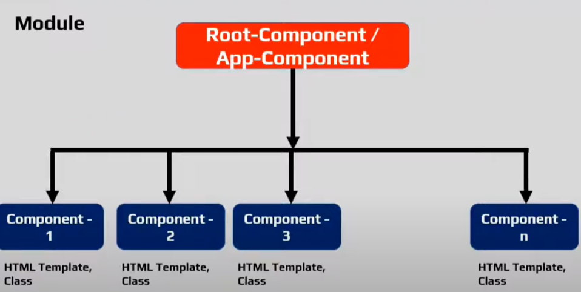

ANGULAR FIRST BASIC PROJECT
Hello World-Angular create steps and output:
- STEP 1 :-
- Create a new angular base project by this command.
- Project Creation command : ng new hello-world (Our project Name)
- STEP 2 :-
- If it is asking, Choose yes for the routing option (not required routing in your application please select NO) and select your style formats like CSS or SCSS.
- STEP 3 :-
- After completing the installation it is showing below folders and file structure.
- STEP 4 :-
- To run the application go to your project directory path.
- STEP 5 :-
- Run the server and see your application in action by using the below command, once successfully completed it is showing the application into Browser.
Note:
- Every Angular Application has at least one Module, known as Root-Module.
- By convention this is called as "App-Module"
- Each Module is made up of Components and Services
- Angular application has at least one component, known as Root Component.
- By Convention it is called as App-Component
- All other user created components are nested under this App-Component.

- Angular Application Contains one or more Modules
- Each Module contains one or more Components and Services.
- Each Component contains HTML Template(View) + Class (logic to control the view).
- Services contains the business logic of your application.